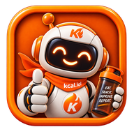
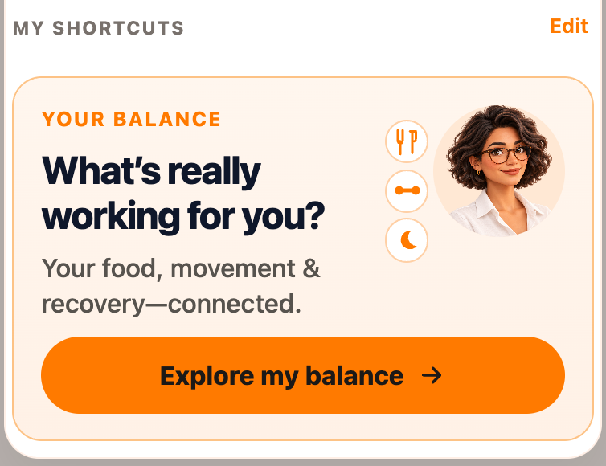

Help
Progress
Your Balance (KCAL Analytics) turns honest logs into a personal energy picture: what is working, what the records support, and what is still unknown. kCal Assistant writes the review; kCal Buddy stays your everyday food companion.

Open Your Balance from Home → Log → My Shortcuts when you want the connected picture — food, movement and recovery — not a verdict on a single morning weigh-in.
Open Your Balance, save or skip the starting-point questions, and leave with one routine to keep or one small next step.
Why this matters
Without a connected review, Foodiary is a pile of receipts. Your Balance shows whether energy, protein, movement and sleep are working under real life.
A saved calorie target is not proof that a different number is excessive. Estimated burn, the saved target and any proposed plan stay separate.
Incomplete logging cannot establish actual intake or inactivity. Missing a dinner label does not prove an incomplete day.
Successful routines deserve to be kept. The review will not invent a harder goal just to fill a report.
What to understand
What to look for.
- 1
Your Balance card in My Shortcuts (Home → Log). It is not a second Home tile.
- 2
Starting-point questions you can skip or edit later
- 3
Your energy — readiness, windows and provenance
- 4
Your patterns — descriptive evidence, not causes
- 5
Your next step — one primary action or a routine to keep
Truth: Opening Your Balance only reaches setup. Generation is a later explicit action with a real receipt.
Truth: Row count is not calendar duration. Your Balance labels both the review window and the longer baseline evidence window.
How to do this in real life
Make Your Balance a calm appointment.
- 1
Keep ordinary meals and weigh-ins on Home
- 2
Open Home → Log → My Shortcuts → Your Balance
- 3
Answer how the routine feels, or skip
- 4
Read Your energy before changing a target
- 5
Keep a working routine when the records agree
- 6
Rate whether the review was useful — that is not a health outcome
Buddy capture feeds the diary that Your Balance reads. Coaching quality rises when trends reflect real restaurants, travel, and training — not curated highlights.

home-your-balance.pngYour energy
Readiness is owned by the existing Method gate: food days, weigh-ins on different days, and the calendar span of those records. Copy shows have/need and either Requirement met or remaining days — never a duplicated unit. Reaching a count does not guarantee a stable personal calibration. A saved review stays frozen; session complete/incomplete marks are not written into that report.
Your patterns
Findings stay descriptive. Planned training is not completed training. Missing movement is not proven inactivity. General mood is not timed fatigue.
Applying a target
A proposed number is not applied until you edit the existing goal. Hockey season does not add calories automatically.
Common mistakes
-
“I judged my whole program on this morning’s weigh-in.”
Use the review window. One morning is weather, not climate.
-
“Progress looked bad so I deleted old logs.”
Deleting erases learning. Keep honesty; adjust forward.
-
“I only open this when I feel guilty.”
Scheduled calm reviews beat shame-triggered chart spirals.
Your Balance is a mirror for patterns, not a verdict on your worth. Log honestly, review when you want the connected picture, keep what works.
Open Your Balance Invitation-only product.